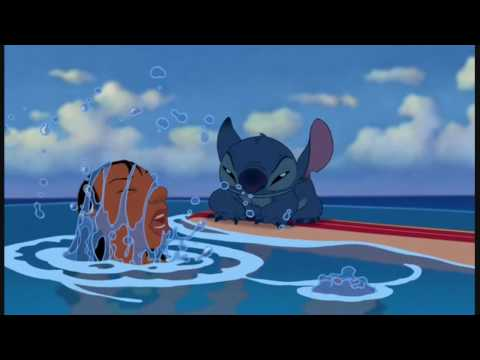

Cowabunga! Vous voulez savoir comment un extraterrestre a appris à surfer? C'est une histoire pleine de chutes, de rires et de vagues! 🌊
Première Rencontre avec l'Océan
Au début, l'océan et moi, ce n'était pas vraiment l'amour fou. L'eau, très peu pour moi! Mais Lilo m'a montré que les vagues pouvaient être amusantes. Elle m'a appris que le surf n'était pas qu'un sport, mais une véritable tradition hawaïenne.
Le saviez-vous? 🏄♂️
Le surf a été inventé par les anciens Hawaïens et était appelé "he'e nalu", ce qui signifie "glisser sur une vague"!
Les Premières Leçons
Mes premières tentatives étaient... disons intéressantes! Je passais plus de temps sous l'eau que sur la planche. Mais avec ma force surhumaine et mes quatre bras (très pratiques pour garder l'équilibre!), j'ai fini par comprendre le truc.
Techniques Spéciales
J'ai développé quelques mouvements bien à moi. Mon préféré? Le "Stitch 360 Spatial" - une rotation complète sur la vague en utilisant mes quatre bras pour plus de style! Même les surfeurs locaux étaient impressionnés (ou peut-être juste surpris de voir un koala bleu sur une planche de surf 😅).
"Le surf, c'est comme l'espace, sauf qu'au lieu de voler entre les étoiles, tu glisses sur les vagues!"
Les Meilleures Plages
Waikiki Beach
Parfaite pour les débutants! C'est ici que j'ai attrapé ma première vague.
North Shore
Pour les surfeurs expérimentés. Les vagues sont énormes! (Même moi, je fais attention ici!)
Conseils de Surf par Stitch
- N'ayez pas peur de l'eau (ça m'a pris du temps, mais j'y suis arrivé!)
- Respectez l'océan et les autres surfeurs
- Commencez par les petites vagues
- Et surtout, amusez-vous! 🌺